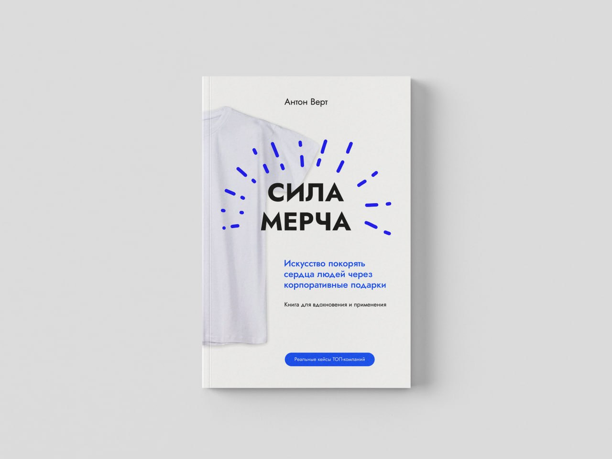
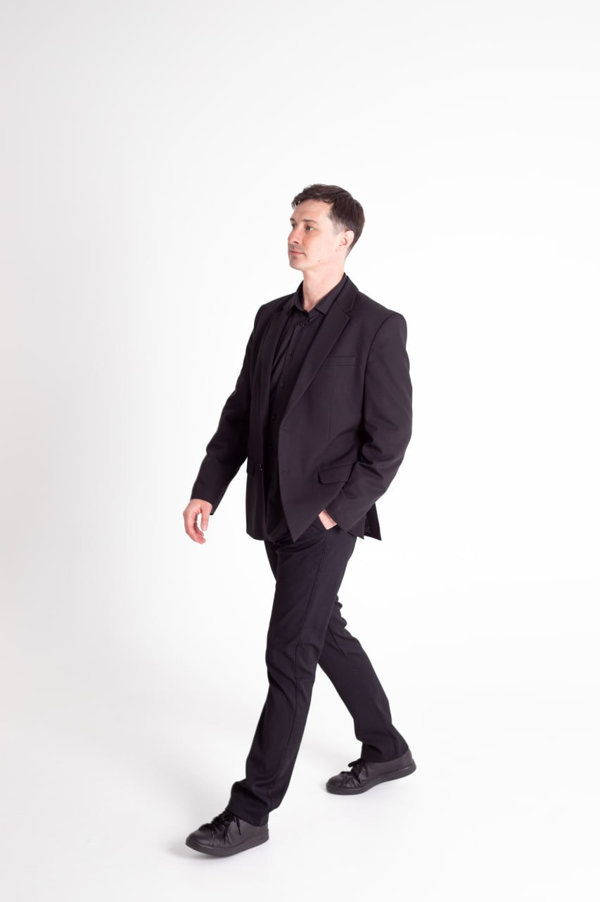

Сделать первые шаги в продажах
Помогаю определить, кому и что вы предлагаете, подготовить представление себя и бизнеса, первые встречи, выступления и выход в соцсети. Вместе намечаем действия и шаги после первого контакта.
Консультант-практик по B2B-продажам и доверительным коммуникациям
Через личное общение и публичность. Помогаю выстроить передачу продаж команде.
Я продолжаю развивать свои проекты и сам участвую в продажах. В работе с вами опираюсь на собственный опыт - удачные решения, ошибки и задачи, которые решаю сейчас.
20 минут, чтобы познакомиться, обсудить задачу и выбрать формат работы.

B2B-продажи начинаются с доверия
Задачи
Можно начать с одной задачи: первых контактов, усиления личного и публичного участия или передачи продаж команде.
Помогаю определить, кому и что вы предлагаете, подготовить представление себя и бизнеса, первые встречи, выступления и выход в соцсети. Вместе намечаем действия и шаги после первого контакта.
Помогаю связать личное общение, соцсети, контент и выступления с привлечением клиентов. Выбираем подходящие площадки и регулярность участия. Профессиональную книгу и новые публичные роли рассматриваем, если они помогают вашей задаче.
Помогаю распределить роли и ответственность, настроить передачу контактов и работу со сделками. Команда продолжает общение с клиентами, сохраняя контекст и доверие к компании.

Опыт и практика
В моём опыте есть и личное привлечение клиентов, и развитие публичности, и передача работы команде. В консультациях опираюсь на пройденные этапы и задачи, с которыми продолжаю работать сам.
vertcomm — в бизнесе сувенирной продукции для рынков ЕАЭС выстраивал канал продаж через личный нетворкинг и публичную деятельность. Настраивал обработку заявок и постепенную передачу работы команде без активного отдела продаж.
Swaggy — развиваю продажи через личное общение, публичность и системную работу команды развития бизнеса. Компания работает с рекламной продукцией в 55+ странах.
vert.expert — развиваю продажи через личный бренд и экспертизу. Использую выступления, интервью и модерацию конференций, чтобы укреплять доверие и получать релевантные обращения.
Моя авторская методика
В работе связываю личное общение, публичную репутацию и действия компании. Этот подход применяю в своих проектах и описываю в книгах «Продажи от сердца» и «Компания доверия».
Помогаю выстраивать общение, в котором можно понять задачу клиента, договориться и продолжить отношения после первой встречи.
Помогаю показывать вашу экспертизу через контент, выступления и авторские материалы, чтобы знакомство с вами начиналось ещё до личного разговора.
Помогаю передавать отношения команде: сохранять договорённости и контекст, распределять ответственность и выполнять обещания компании.
Книги
В книгах собираю свой опыт продаж, предпринимательства и доверительных коммуникаций. Сейчас пишу «Продажи от сердца» и «Компанию доверия». Ранее написал «Силу мерча» о роли бизнес-подарков в работе компании.


Доверительные коммуникации в B2B-продажах
О личном общении, публичности и передаче доверия от первого лица компании к команде. Собираю опыт и инструменты для долгих отношений с клиентами.
О книге и подходе
Доверительные коммуникации в бизнесе
О том, как компания выстраивает доверие и поддерживает его в повседневной работе с клиентами и командой.

Бизнес-подарки в HR и маркетинге
О том, как бизнес-подарки помогают компании общаться с сотрудниками и клиентами и решать задачи HR и маркетинга.
О книгеФорматы работы
На интро обсуждаем вашу задачу и выбираем подходящий формат. После разговора я предлагаю план работы и стоимость.
Разбираю вашу ситуацию и конкретный вопрос: личное общение, публичное представление или продажи. Помогаю определить фокус и следующие действия.
Договориться об интроПомогаю двигаться от задачи к действиям: разбираю с вами результаты, корректирую подход и поддерживаю внедрение в вашей работе.
Договориться об интроРазбираю задачи команды и помогаю подготовиться к выставкам, переговорам, продажам в соцсетях и публичным выступлениям. Работаю с представлением компании и продолжением общения после контакта.
Договориться об интроПлан работы и стоимость определяем после вводного разговора.
Как начинаем
Вы коротко описываете задачу, мы выбираем время разговора.
Обсуждаем вашу ситуацию, желаемый результат и подходящий формат.
Я предлагаю план, ожидаемый результат работы и стоимость.
Вы оплачиваете согласованный формат.
Действуем по согласованному плану.
Обращение
Напишите пару слов о себе, бизнесе и результате, к которому хотите прийти. Договоримся о 20-минутном интро и обсудим, чем я могу помочь.
